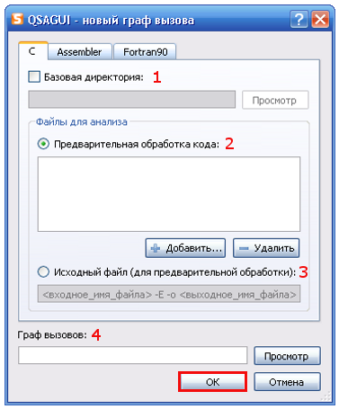
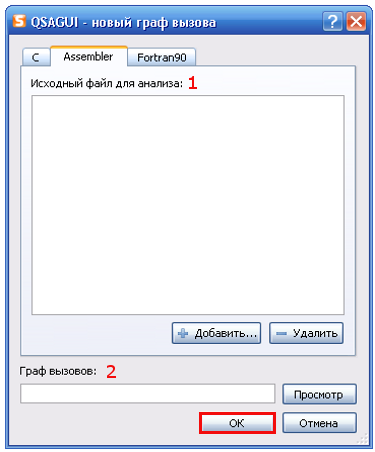
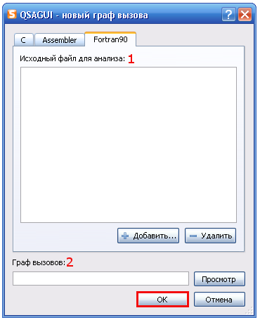

Содержание
Что такое QSAGUI?
Начало
Создание графа вызовов
Соединение графов вызовов
Очистка графа вызовов
Обновление графа вызовов
Получение списков файлов/функций
Показать граф вызовов
Настройки
|
Создание графа вызовов
Используйте "Граф вызовов"-> "Новый..." или кнопку "Новый" на панели инструментов или сочетание клавиш "Ctrl+N".
Вы можете анализировать C, assembler ( только синтаксис Intel, базирующийся на assemblers (MASM) ) и fortran ( только стандартный fortran90 ) коды.

1. Вы можете проигнорировать эту опцию, но если Вы не хотите видеть информацию, связанную с системными заголовками, которые были включены в.c (как stdio.h и функции как printf ()), введите полный путь к каталогу с исходным файлом.
2. 3. Определите один из двух типов файлов для того, чтобы анализировать - от предварительно обработанного кода или от исходного файла. В первом случае Вы можете добавить несколько файлов в список, для каждого графа вызовов будет создан файл, и затем они будут соединены. Во втором случае введите команду для предварительной обработки (см. документацию для своего компилятора).
4. Выберите название для графа вызовов, подаваемого на выход, вы можете указать любое расширение, но ".cg" рекомендуется.
 
1. Эта опция подобна 2. в C. Выберите один или несколько assembler/fortran90 исходных файлов.
2. Эта опция подобна 4. в C.
Нажмите кнопку "OK", чтобы получить граф вызовов.
|